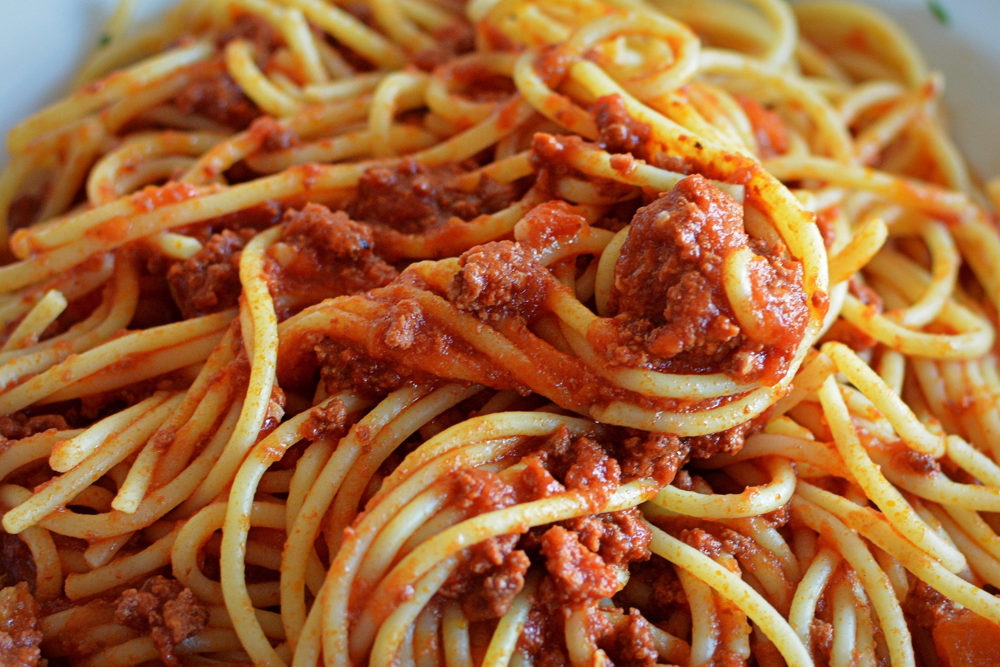

Home
Spaghetti

Description
10 minute Easy Spaghetti Recipe with tomato sauce, garlic, oregano and Parmesan. It's quick and simple recipe for spaghetti everyone loves!
Cooking Equpiment
- Dutch Oven
- Measuring Cups
- Measuring Tools
Ingredients
- 12 ounces any spaghetti, uncooked
- 15 ounces can tomato sauce, low sodium
- 2 tablespoons olive oil, extra virgin
- 5 large garlic cloves, minced
- 2 1/2 teaspoons salt
- Ground black pepper, to taste
- 2 teaspoons oregano, dried
- Parmesan cheese, grated
Cooking Directions
-
Fill large Dutch oven or pot with cold water 3/4 full and bring to a boil. Add 2 teaspoons salt and spaghetti. Separate pasta with tongs a few times during first 2 minutes of cooking. This will ensure spaghetti do not stick together.
-
Cook pasta uncovered for 5 more minutes or until al dente, stirring occasionally. Taste for doneness while cooking. Do not overcook until too soft. The key to tasty pasta is firm cooked pasta. Drain spaghetti in a colander.
-
Return pot to medium heat and add olive oil, 4 garlic cloves and oregano. Turn off the heat. Stir constantly for 20 seconds.
-
Add drained pasta, tomato sauce, remaining 1/2 teaspoon salt, black pepper and 1 garlic clove. Stir gently until warmed through.
-
Sprinkle with Parmesan cheese and serve immediately